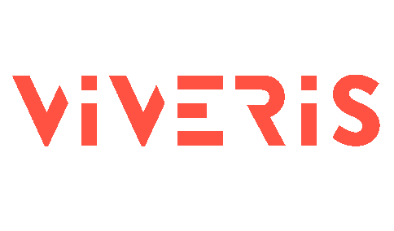

Lyon | Fév. 2024 – Août 2024
Projet CNRS — Gestion de liquéfaction d'hélium
Présentation
Ce projet consiste à développer une application de gestion des stocks et des mouvements d'hélium pour le CNRS de Grenoble, permettant aux chercheurs de gérer les ressources efficacement et d'imputer les coûts de consommation.
Contexte et objectifs
L'application modernise un système existant en utilisant des technologies récentes (Angular et Java Spring) pour garantir des performances optimales et une interface plus intuitive.
- Équipe : Chef de projet, 2 stagiaires
- Méthodologie : Agile, sprints de 3 semaines, réunions quotidiennes
Technologies utilisées
- Frontend : Angular
- Backend : Java Spring
- Base de données : MariaDB
- Tests : Cypress, Jest
- CI/CD : GitLab, Docker, SonarQube
Détails techniques
Application monolithique avec intégration continue. Utilisation de JHipster pour générer le squelette de l'application et de Docker pour la conteneurisation et le déploiement.
Missions principales
- Développement du module Catalogue pour la gestion des entités (vases, unités, cadres).
- Calculs spécifiques pour estimer la production et le stockage d'hélium.
- Mise en place de l'intégration continue et automatisation des tests.
Compétences acquises
Développement en Angular et Java Spring, gestion Agile de projet, utilisation d'outils CI/CD, collaboration et communication au sein de l'équipe.